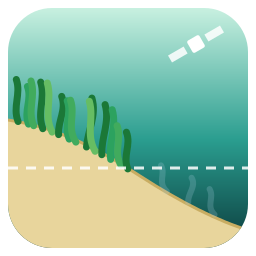
GLUB! cartografía hábitats bentónicos someros (pradera, arena, roca y las clases que tú definas) con imágenes Sentinel-2 dentro de QGIS. Descarga las imágenes, prepara la reflectancia, quita el brillo del sol, compone varias fechas, corrige la columna de agua y clasifica el fondo con tu propia verdad de campo. Además decide, píxel a píxel, si el satélite ve el fondo, y da la exactitud del mapa con las advertencias que importan.
Va de la mano de StarShoal, el plugin de batimetría desde satélite del mismo autor: sus capas de profundidad y de confianza son la entrada natural para el límite óptico.
glub_1_0_0.zip. Cuando esté publicado, se podrá instalar desde el repositorio oficial.python -m pip install scikit-learn. Sin él se usa máxima verosimilitud.El plugin añade su propio menú GLUB! en la barra de menús de QGIS (junto a Ayuda), un botón en la barra de herramientas, una entrada en Ráster y un grupo de herramientas en la caja de Processing. El idioma (español o inglés) se elige en la pestaña Inicio y vale también para el registro y el informe HTML.
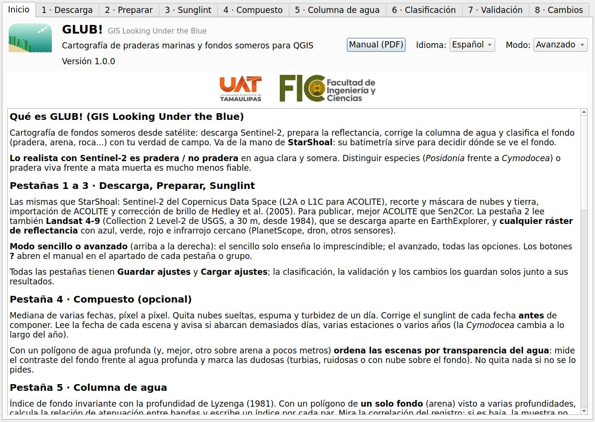
| Paso | Pestaña | Qué hace | ¿Hace falta? |
|---|---|---|---|
| 1 | Descarga | Busca y descarga Sentinel-2 L2A o L1C de Copernicus. | Si aún no tienes las imágenes |
| 2 | Preparar | Recorta, quita nubes y tierra (NDWI) y escribe un GeoTIFF de reflectancia de 4 bandas desde Sentinel-2 L2A, Landsat 4-9 o ACOLITE. | Sí |
| 3 | Sunglint | Corrección de Hedley et al. (2005) con un polígono de agua profunda. | Si hay brillo |
| 4 | Compuesto | Mediana píxel a píxel de varias fechas. | Opcional |
| 5 | Columna de agua | Índice de fondo invariante con la profundidad de Lyzenga. | Recomendado |
| 6 | Clasificación | Máscara por profundidad, clasificador, validación e informe. | Sí |
| 7 | Validación | Puntos de validación aleatorios estratificados; exactitud y superficies corregidas con ellos. | Para cifras que vayas a publicar |
| 8 | Cambios | Transiciones entre dos mapas de clases (fecha 1 → fecha 2). | Para seguimiento |
Modo sencillo y avanzado, botones de ayuda. La pestaña Inicio tiene un selector de Modo. Sencillo (el de partida) enseña solo las opciones imprescindibles de cada pestaña, con valores por defecto razonables; avanzado las enseña todas (separación, tamaño de bloque, semilla, equilibrio de clases, textura, probabilidad mínima, limpieza, ajustes de la prueba de señal, diseño del muestreo…). Las opciones ocultas no se pierden: siguen con su valor, y el informe las recoge todas. Los botones ?, en cada pestaña y en los grupos principales de la clasificación, abren este manual en el apartado justo.
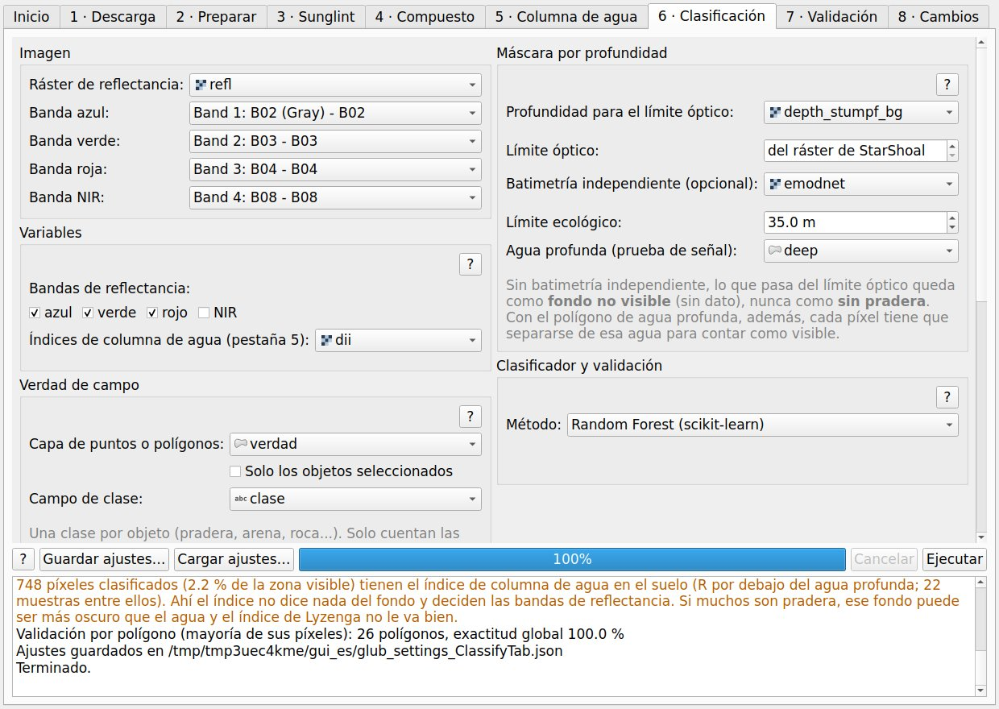
Cada pestaña pasa su resultado a la siguiente, así que lo normal es: descargar, preparar, quitar el brillo, (componer), columna de agua, clasificar y, con el mapa hecho, sacar los puntos de validación para el campo. StarShoal entra antes del paso 6 para dar las capas de profundidad y confianza de la máscara óptica.
Indica una zona (capa de polígonos y/o una extensión dibujada en el lienzo), fechas, nivel y nubes máximas. Buscar escenas no necesita cuenta; marca las que quieras y pulsa Descargar seleccionadas. Se descartan los duplicados de la misma fecha y tesela y se queda el procesado más reciente. Elige L2A para el flujo normal o L1C si vas a pasar ACOLITE.
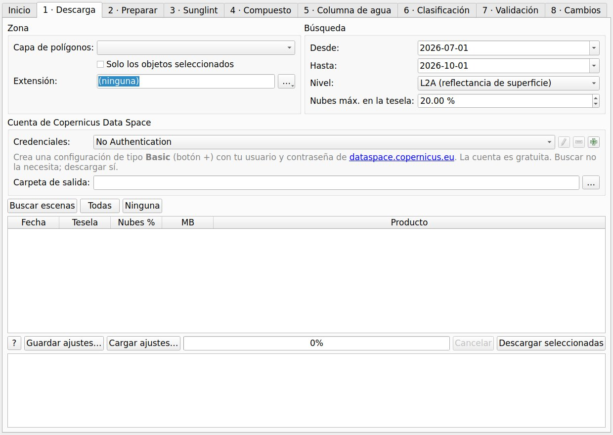
Lee el zip de Sentinel-2 sin descomprimir, lo recorta a la zona y escribe un GeoTIFF con azul (B02), verde (B03), rojo (B04) y NIR (B08) a 10 m, en reflectancia de superficie (se aplica el offset de los productos de la versión de procesado 04.00 en adelante). Quita nubes y sombras con la capa SCL y tierra con el NDWI. Para publicar, mejor ACOLITE que Sen2Cor: descarga el L1C, pásalo por ACOLITE (programa aparte) e importa aquí su salida. Las zonas grandes se procesan por franjas, así que una tesela entera cabe en memoria.
Landsat. Elige Landsat 4-9 Collection 2 Level-2 de USGS y da el .tar tal como se descarga de USGS EarthExplorer (hace falta una cuenta gratuita; GLUB no descarga Landsat), la carpeta descomprimida o cualquier fichero del producto. Escribe el mismo GeoTIFF de 4 bandas, a 30 m: SR_B2-B5 en Landsat 8 y 9, SR_B1-B4 en Landsat 4, 5 y 7, reflectancia = DN × 2,75·10-5 − 0,2, nubes, sombras y nieve quitadas con QA_PIXEL y tierra con el NDWI. Landsat 5 llega hasta 1984, lo que permite series largas de cambios, pero sus píxeles de 30 m son más bastos que los 10 m de Sentinel-2. Landsat 7 posterior a mayo de 2003 tiene huecos en bandas (SLC-off), que quedan sin dato. ACOLITE también procesa Landsat, y su salida se importa con la opción de ACOLITE, que elige las bandas por longitud de onda.
Otros rásteres de reflectancia. Otro ráster de reflectancia admite cualquier ráster con bandas azul, verde, roja e infrarrojo cercano (PlanetScope, un dron con banda NIR, otros satélites). Indica qué banda es cada una y cómo pasar los valores guardados a reflectancia (valor × escala + desplazamiento; para la reflectancia de PlanetScope guardada como 0-10000, × 0,0001). Se recorta y se le quita la tierra con el NDWI como a las otras fuentes, y conserva su tamaño de píxel. No se quitan nubes, porque un ráster cualquiera no trae una capa de nubes estándar: quítalas antes o déjalas fuera del polígono de zona. Si tras escalar la banda verde no parece reflectancia (mediana por encima de 1,5 o por debajo de −0,05), el registro avisa.
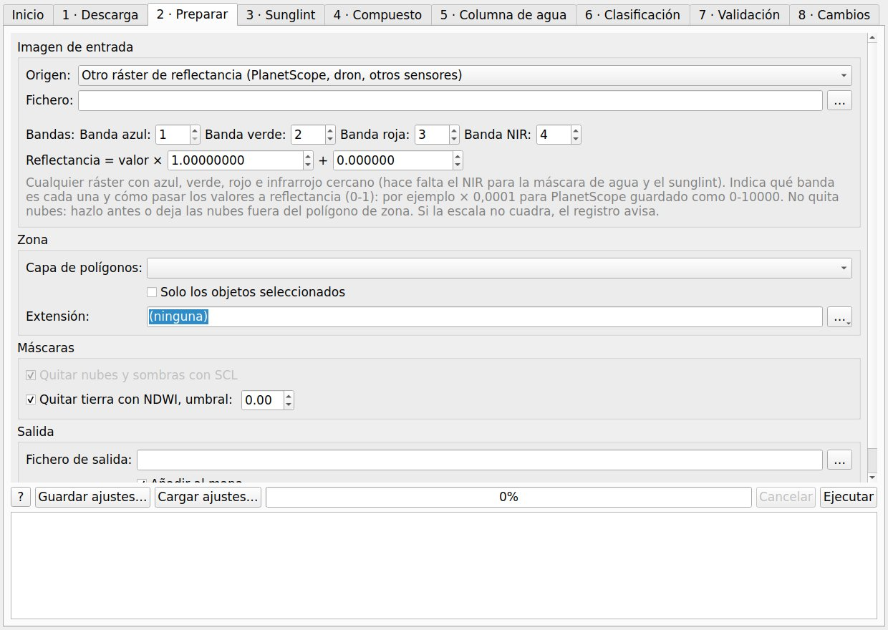
Hedley et al. (2005): sobre un polígono de agua ópticamente profunda con algo de brillo, se ajusta cada banda visible frente al NIR y se resta el brillo que predice el NIR. Mira el R² de cada banda en el registro: si es bajo, hay poco brillo o la muestra no es buena.
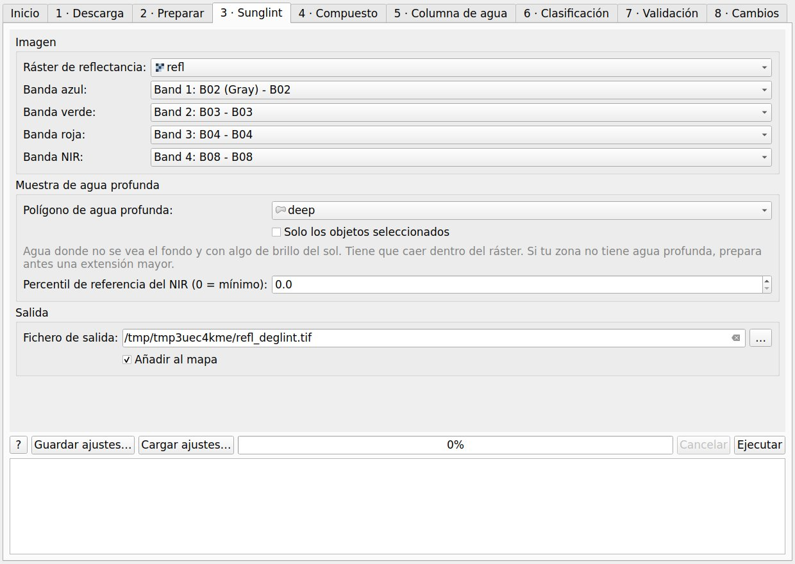
Mediana píxel a píxel de varias fechas, remuestreadas a la rejilla de la primera. Quita nubes sueltas, espuma y turbidez de un día. Un segundo ráster cuenta las fechas válidas por píxel. Se lee la fecha de cada escena y el registro avisa si abarcan más de un número de días (45 por defecto), varias estaciones o varios años: la pradera (sobre todo Cymodocea) y la transparencia del agua cambian a lo largo del año. No se quita nada automáticamente. Quita el brillo de cada fecha antes de componer.
Orden por transparencia del agua. Antes de componer (o para elegir la fecha que vas a cartografiar), las escenas de la lista se pueden ordenar por transparencia del agua. Da un polígono de agua profunda y, mejor, otro sobre un fondo claro (arena a pocos metros). En cada escena mide el rojo medio y el ruido (desviación típica) del agua profunda y el contraste del fondo: (mediana de R sobre el fondo claro − media del agua profunda) / σ del agua profunda, el mayor de azul y verde. Es lo mismo que la prueba de señal de la clasificación, así que más contraste significa que ese día el fondo se ve más hondo. Sin el polígono de fondo, el orden usa el rojo del agua profunda (más rojo = más sedimento).
Las escenas dudosas se marcan, nunca se quitan solas: contraste por debajo de la mitad de la mejor, polígono de fondo casi todo bajo nube o sin dato, o agua profunda con más del doble de ruido que la mediana de las escenas. Quitar las marcadas las saca de la lista si estás de acuerdo. Las cifras van a scene_clarity.csv. Son reglas prácticas para comparar fechas de un mismo sitio, no umbrales de calidad del agua.
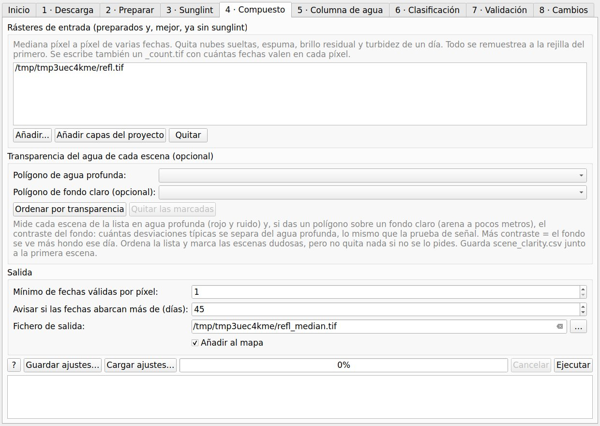
Índice de fondo invariante con la profundidad de Lyzenga (1981). Sobre un polígono de un solo tipo de fondo (casi siempre arena) visto a varias profundidades, calcula la relación de coeficientes de atenuación de cada par de bandas, ki/kj = a + √(a² + 1), con a = (var Xi − var Xj) / (2 cov(Xi, Xj)) y X = ln(R − R∞), y escribe un índice por par, Xi − (ki/kj) Xj. R∞ sale de un polígono de agua profunda (media − k desviaciones típicas).
_floored.tif. Son ruido del agua profunda o un fondo más oscuro que el agua, donde el modelo de Lyzenga no vale. La clasificación avisa de cuántos píxeles clasificados tienen el índice en el suelo.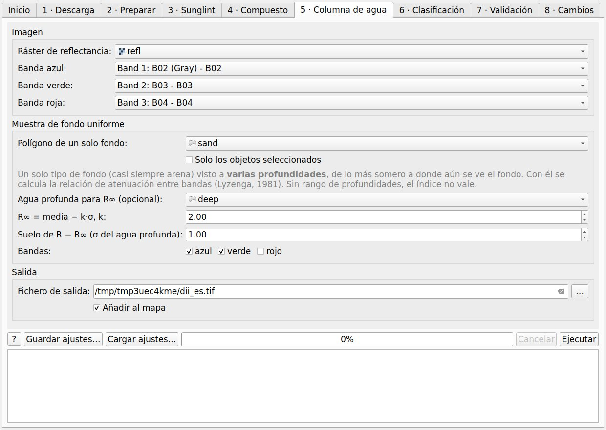
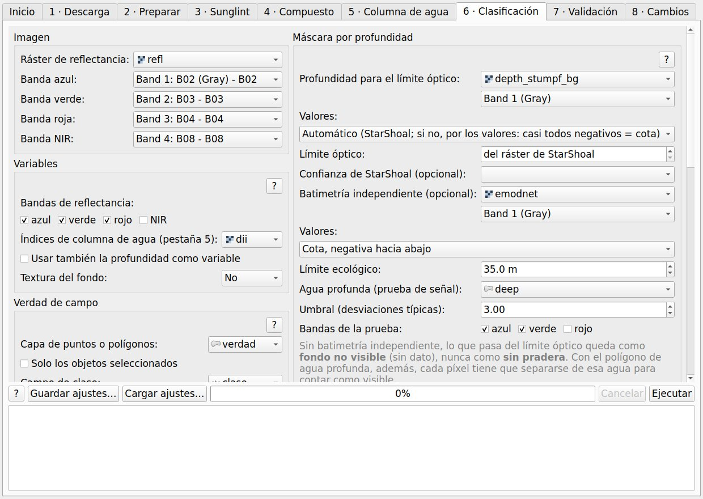
Variables. Bandas de reflectancia (azul, verde y rojo por defecto) y/o todas las bandas del ráster de índices de columna de agua. Se puede añadir la profundidad como variable, pero viene apagado y no se recomienda: el error de una batimetría desde satélite depende del color del fondo (una pradera oscura parece más honda), así que mete un error ligado a las clases.
Verdad de campo. Una capa de puntos o polígonos con un campo de clase. Los píxeles de un mismo polígono van siempre juntos a calibración o a validación. Los polígonos se pueden encoger (buffer hacia dentro) para dejar fuera los píxeles mezclados del borde; 10 m (un píxel) es un buen punto de partida. Se usan como mucho N píxeles al azar por polígono (200 por defecto) para que los polígonos grandes no dominen.
Máscara por profundidad, tres estados.
| Estado | Código | Significado | Necesita |
|---|---|---|---|
| Fondo visible | 1…k | El píxel se clasifica. | Profundidad ≤ límite óptico, confianza = 1 y señal del fondo |
| Fondo no visible | 250 | Sin dato: puede haber pradera o no. | Pasado el límite óptico o sin señal del fondo |
| Demasiado hondo | 251 | Más hondo que el límite ecológico: sin pradera. | Una batimetría independiente |
| Sin dato | 255 | Tierra, nube, fuera de la zona o variable sin valor. | – |
Clasificador y validación.
| Opción | Por defecto | Notas |
|---|---|---|
| Método | Random Forest | Máxima verosimilitud (gaussiana, solo numpy) si falta scikit-learn o si la eliges. |
| Equilibrar clases | Apagado | Encendido: todas las clases pesan igual; las raras se detectan más, pero su superficie crece. Para superficies, déjalo apagado. |
| Separación | Bloques espaciales por clase | También bloques comunes a todas las clases (separación espacial completa) o al azar por objeto. |
| Tamaño de bloque / fracción de validación | 500 m / 0.3 | Los bloques deben ser mayores que la autocorrelación espacial de tus muestras. |
| Exportar a polígonos | Apagado | Escribe además el mapa como polígonos en un GeoPackage (classes.gpkg, o classes_filtered.gpkg si hay mapa filtrado): cada mancha de una clase es un polígono con su clase, superficie (ha) y perímetro (m). Los bordes siguen los píxeles, sin suavizar. Lo mismo está en Processing para cualquier mapa de clases o de cambios. |
| Textura del fondo | Apagada | Añade como variables la desviación típica local en ventanas de 3×3 o 5×5 de los índices de columna de agua (o del azul y el verde si no los hay). Ayuda a separar fondos a manchas (pradera fragmentada, roca) de fondos lisos (arena) de color parecido. En una prueba sintética en la que dos fondos tenían los mismos valores de píxel y solo cambiaba su disposición, la exactitud por píxel pasó del 53 % al 85 % con una ventana de 3×3; con píxeles reales de 10 m la mejora puede ser mucho menor, así que compara la exactitud con y sin textura y mira su importancia en el informe. |
| Probabilidad mínima | Apagada | Si ninguna clase llega a ella, el píxel queda 'sin clasificar (baja confianza)', código 252, en vez de forzar una clase. El informe da qué parte de las muestras de validación cae ahí; la exactitud pasa a ser la de lo que el mapa sí clasifica, así que lee las dos cosas juntas. La probabilidad es relativa, no una confianza calibrada: prueba 0,5 a 0,6 y mira cuánto mapa se pierde. |
| Filtro de mayoría / unidad mínima | Apagado | Se guarda como classes_filtered.tif; el mapa sin filtrar se conserva. Solo cambian píxeles de clase. |
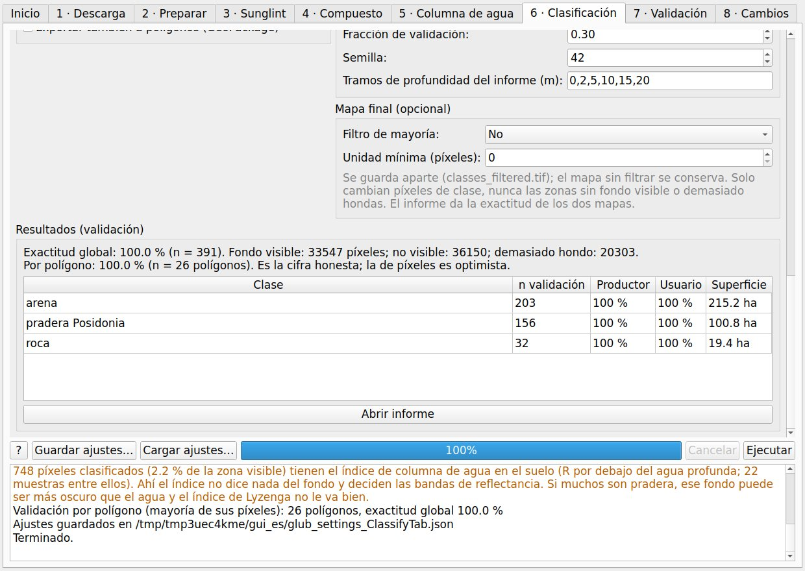
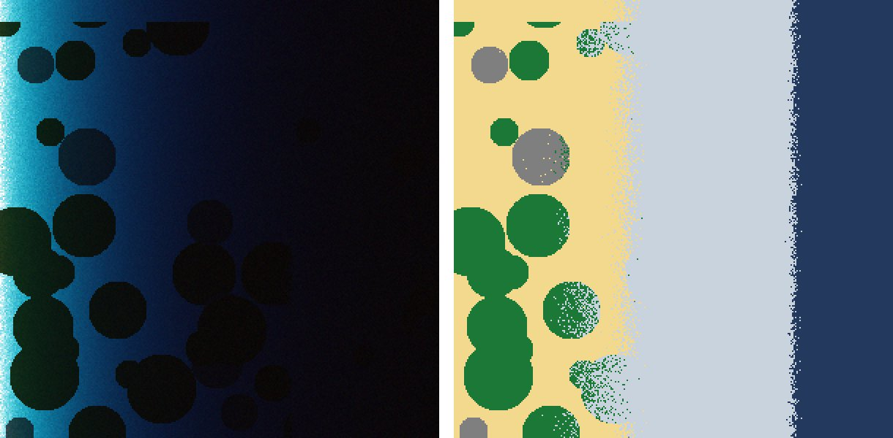
La exactitud de la pestaña 6 sale de una verdad de campo puesta donde se pudo, así que sus superficies corregidas son orientativas. Para cifras que publicar hace falta un muestreo probabilístico: puntos sorteados al azar dentro de cada clase del mapa (muestreo aleatorio estratificado) y etiquetados sin mirar el mapa (Olofsson et al., 2014). Esta pestaña hace las dos mitades.
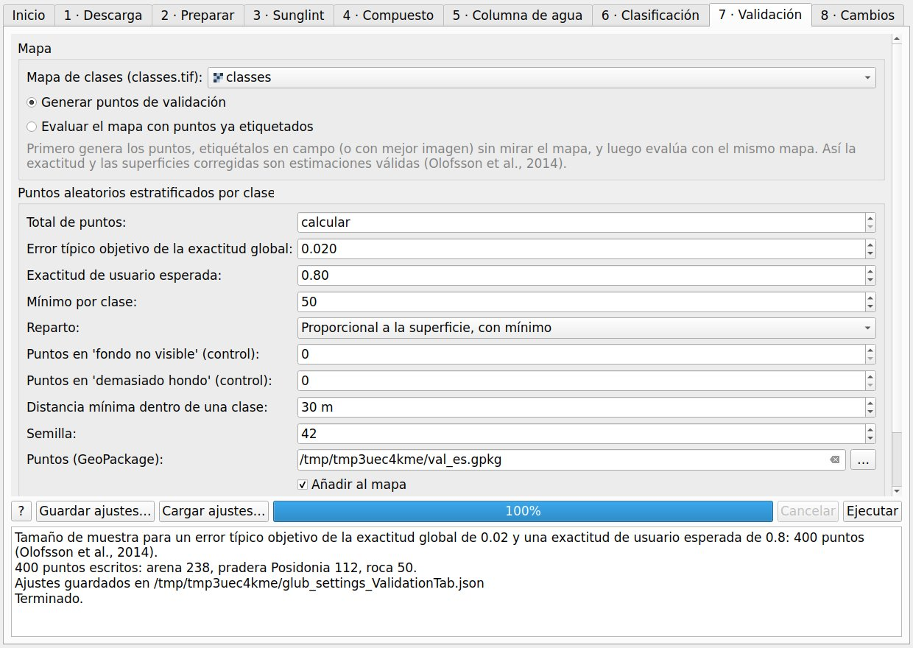
1. Generar puntos.
| Opción | Por defecto | Notas |
|---|---|---|
| Total de puntos | calcular | Se calcula como n = (Σ Wi Si / S(EG))², con Wi la parte de superficie de cada clase, Si = √(U(1 − U)) para una exactitud de usuario esperada U y S(EG) el error típico objetivo de la exactitud global (Olofsson et al., 2014). 0,02 con U = 0,8 da unos 400 puntos. O pon el total a mano. |
| Reparto / mínimo por clase | proporcional, 50 | Proporcional a la superficie, pero cada clase recibe al menos el mínimo, para que las raras tengan puntos suficientes para su exactitud de usuario. O igual en todas. |
| Zona de baja confianza | automática | Si el mapa la tiene (código 252), es un estrato más, para poder repartir su superficie entre las clases. |
| Puntos de control de la máscara | 0 | Unos pocos puntos en 'fondo no visible' y 'demasiado hondo', para ver qué hay de verdad. No entran en la estimación de superficie. |
| Distancia mínima | 30 m | Solo entre puntos de la misma clase. Los errores del mapa se juntan en los bordes entre clases; separar puntos de clases distintas los dejaría infra-muestreados, y en las pruebas sesgaba las superficies corregidas. |
La salida es un GeoPackage con un punto en el centro de cada píxel y los campos point_id, stratum, map_class, x, y, lon, lat (para el GPS), ref_class vacío y notes, y un CSV con los estratos. Escribe en ref_class los nombres de clase del mapa (mayúsculas y espacios dan igual). En un mapa de cambios, la etiqueta es la transición tal como la nombra el mapa (mira map_class): por ejemplo pradera → arena (vale también ->) o pradera (sin cambio).
2. Etiquetarlos. En campo (buceo, cámara de arrastre) o con mejor imagen, escribe en ref_class lo que hay de verdad, con los mismos nombres que las clases del mapa. No mires el mapa mientras etiquetas. Visita todos los puntos que puedas: si los que faltan son los difíciles (hondos, lejanos), las estimaciones salen sesgadas.
3. Evaluar el mapa. Con el mismo mapa y los puntos etiquetados, el informe (assessment.html) da los estratos, la matriz de confusión en número de puntos, la exactitud global con su intervalo del 95 %, la exactitud del usuario y del productor ponderadas por superficie, y la superficie estimada de cada clase con su intervalo del 95 %. Las etiquetas que el mapa no tiene quedan como clases aparte (toda su superficie sale de errores del mapa). Los puntos de las zonas de la máscara van a una tabla aparte: pradera en 'demasiado hondo' indica que el límite ecológico está demasiado somero.
Comprobación con la escena sintética: en 20 sorteos repetidos de 400 puntos, los intervalos del 95 % de las superficies corregidas contuvieron la superficie real en 53 de 60 casos (88 %), algo por debajo del 95 % nominal, como es normal con clases raras y muestras pequeñas; el error medio por clase fue menor de 1 ha.
Compara dos mapas de clases del mismo sitio, fecha 1 (antes) y fecha 2 (después). Las clases se emparejan por nombre, así que los dos mapas necesitan los mismos nombres de clase (los códigos pueden ser distintos); el segundo mapa se ajusta a la rejilla del primero. Solo se comparan los píxeles con el fondo clasificado en las dos fechas: si un píxel es 'fondo no visible', 'demasiado hondo' o 'baja confianza' en alguna de ellas, queda como no comparable (código 250), para no confundir el agua turbia de un día con pérdida de pradera.
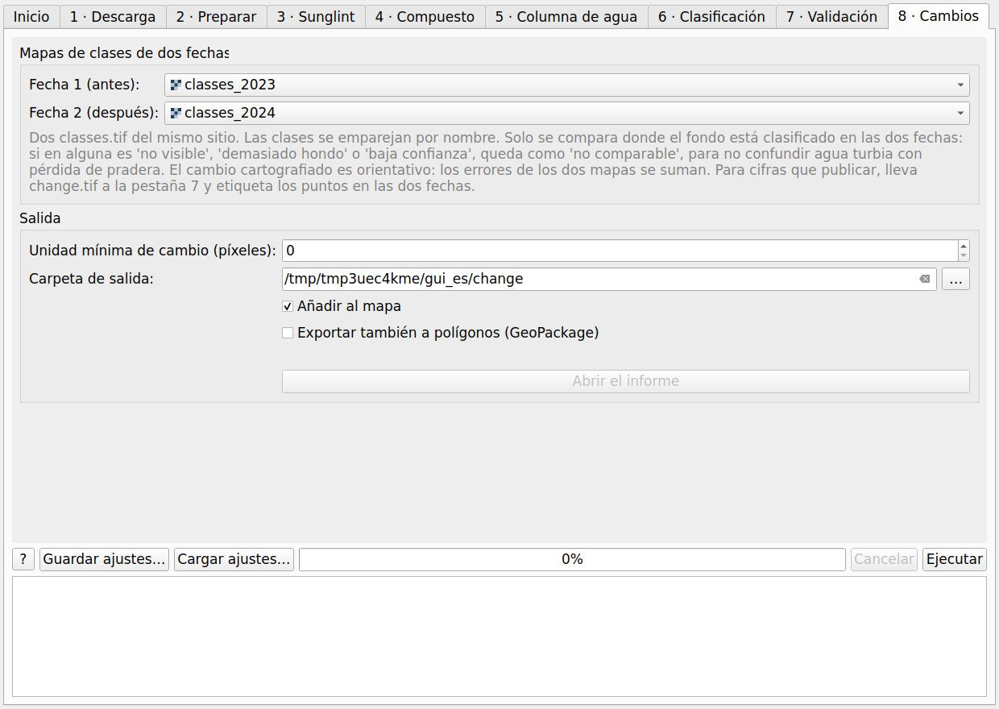
Salidas: change.tif, un código por transición (pérdida de pradera en rojo, ganancia en verde, 'sin cambio' en un tono claro de cada clase) con su estilo de QGIS; change_matrix.csv, la matriz de transiciones en hectáreas; change_report.html, con la zona comparable, la matriz y las ganancias, pérdidas y cambio neto por clase; y, con unidad mínima de cambio, change_filtered.tif, donde las manchas de cambio de menos de N píxeles se unen a la mancha vecina. Si quieres, el mapa de cambios se exporta también a polígonos (change.gpkg, o change_filtered.gpkg con unidad mínima de cambio), uno por mancha con su transición y superficie.
change.tif a la pestaña 7: los puntos se sortean por clase de transición, cada uno se etiqueta en las dos fechas (por ejemplo con imágenes de archivo o registros de campo) y la evaluación da las superficies de cambio con sus intervalos, como proponen Olofsson et al. (2014).| Fichero | Contenido |
|---|---|
classes.tif (+ .qml) | Códigos de clase 1…k, 250 fondo no visible, 251 demasiado hondo, 252 baja confianza (si hay probabilidad mínima), 255 sin dato; tabla de color y estilo de QGIS. |
classes_filtered.tif | Solo con filtro de mayoría o unidad mínima. |
probability.tif | Banda 1: probabilidad de la clase más probable; luego una banda por clase. Es relativa, no una confianza calibrada. |
legend.csv | Códigos, clases, colores, píxeles y hectáreas. |
samples.csv | Cada píxel de calibración y validación: coordenadas, clase, conjunto, predicción, profundidad y valores de las variables. |
report.html | Parámetros, avisos, máscara, exactitud y superficies (apartado 6). |
validation_points.gpkg, *_strata.csv | Puntos de validación para etiquetar y sus estratos (pestaña 7). |
assessment.html, assessment_points.csv | Evaluación con los puntos etiquetados (pestaña 7). |
*_dii.tif, *_floored.tif | Índices de columna de agua y la máscara de píxeles en el suelo. |
*_median.tif, *_count.tif | Compuesto y fechas válidas por píxel. |
classes.gpkg, change.gpkg | Mapas como polígonos con clase, superficie y perímetro (opcional). |
glub_settings_*.json | Ajustes de la ejecución, para repetirla. |
change.tif, change_matrix.csv, change_report.html | Cambios entre dos mapas (pestaña 8). |
scene_clarity.csv | Cifras de transparencia y orden de cada escena. |
Guardar los ajustes de una ejecución. Cada pestaña tiene los botones Guardar ajustes… y Cargar ajustes… junto a Ejecutar. Escriben o leen un fichero JSON con todas las opciones de la pestaña, y las capas por su ruta. Clasificación, validación y cambios lo guardan además solos junto a sus salidas (glub_settings_ClassifyTab.json, glub_settings_ValidationTab.json, glub_settings_ChangeTab.json), así que meses después puedes ver, y repetir, qué hizo exactamente un mapa. Al cargar, si la capa ya está en el proyecto se usa esa; si no, se añade su fichero; si el fichero se ha movido, el registro lo avisa y la eliges a mano.
Cada paso es también una herramienta de Processing (grupo GLUB), para modelos y procesos por lotes:
| Herramienta | ID |
|---|---|
| Descargar Sentinel-2 | glub:download_sentinel2 |
| Preparar reflectancia Sentinel-2 L2A | glub:prepare_sentinel2_l2a |
| Preparar reflectancia Landsat 4-9 Collection 2 Level-2 | glub:prepare_landsat_l2 |
| Preparar cualquier ráster de reflectancia | glub:prepare_generic |
| Importar salida de ACOLITE | glub:import_acolite |
| Corrección de sunglint (Hedley) | glub:deglint_hedley |
| Compuesto de mediana de varias fechas | glub:composite_median |
| Ordenar escenas por transparencia del agua | glub:scene_clarity |
| Corrección de columna de agua (Lyzenga) | glub:water_column_dii |
| Clasificación de hábitats bentónicos | glub:classify_benthic |
| Mapa de clases o de cambios a polígonos | glub:polygonize_map |
| Puntos de validación (aleatorio estratificado) | glub:validation_points |
| Evaluación del mapa con puntos de validación | glub:assess_map |
| Cambios entre dos mapas de clases | glub:change_detection |
Ibarra-Marinas, D., Fenollar-Rueda, A., García-García, A. M. de J., Bellido-Solano, Á., Mata-Chacón, D., Serrano-Vicente, M. y Mora-Olivo, A. (2026). GLUB (GIS Looking Under the Blue) (versión 1.0.0) [complemento de QGIS]. Universidad Autónoma de Tamaulipas. https://github.com/adanielibarra/glub. DOI de Zenodo pendiente de la publicación. El repositorio lleva un fichero CITATION.cff (GitHub lo muestra como 'Cite this repository') y un .zenodo.json para el registro de Zenodo.
Autores: Daniel Ibarra-Marinas1, Alejandro Fenollar-Rueda2, Ana Mónica de Jhesú García-García1, Ángela Bellido-Solano3, Dulce Mata-Chacón4, Marta Serrano-Vicente5, Arturo Mora-Olivo1. 1 Facultad de Ingeniería y Ciencias, Universidad Autónoma de Tamaulipas · 2 Universidad de Alicante · 3 Universidad Complutense de Madrid · 4 Instituto Español de Oceanografía (IEO-CSIC) · 5 Universidad de Murcia. Contacto: Daniel Ibarra-Marinas, daniel.ibarra@uat.edu.mx · ORCID 0000-0003-3683-4456 · GitHub adanielibarra.
Datos: contiene datos modificados de Copernicus Sentinel, servidos por el Copernicus Data Space Ecosystem. ACOLITE lo desarrolla el RBINS (GPL-3) y no forma parte de este plugin.
Licencia: GPL-2.0-or-later.